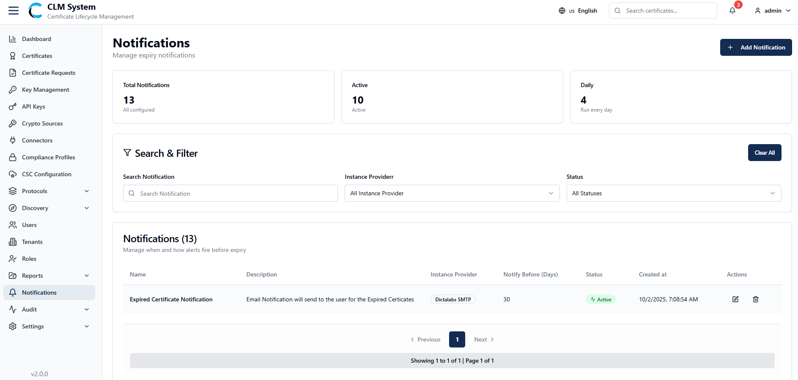
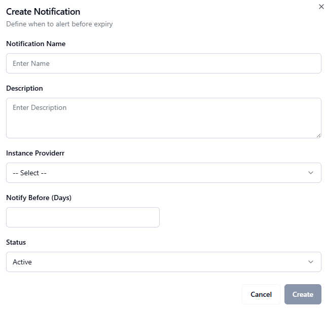

Managing Notifications
The Notifications section allows administrators to configure and monitor system notifications such as alerts, reminders, and scheduled reports.

Notifications Overview
At the top of the Notifications page, administrators can view summary information displayed in cards:
-
Total Notifications – The total number of notifications configured in the system.
-
Active Notifications – The number of currently active notifications.
-
Daily Notifications – The number of notifications scheduled to run daily.
Search and Filter
Below the summary cards, a Search and Filter section allows administrators to:
-
Search notifications by name or keyword.
-
Apply filters such as notification type, status.
Notifications List
The notifications list displays all configured notifications in a table format, typically including:
-
Notification Name
-
Description
-
Instance Provider
-
Status (Active/Inactive)
-
Notify Before (Days)
-
Actions (e.g. Edit, or Delete)
This view helps administrators manage and maintain system-wide notification settings effectively.
Creating a New Notification
To configure a new notification in CLM, follow these steps:
1. Navigate to the Notifications Page
From the sidebar menu, select Notifications.
On the top-right corner of the page, click the Add Notification button.

2. Fill in the Notification Form
A form will open with the following fields:
-
Notification Name – Enter a unique name for the notification.
-
Description – Provide a short description of the notification.
-
Instance Provider (Dropdown) – Select the instance/provider associated with this notification.
-
Notify Before (Days) – Specify the number of days before the event or expiry when the notification should be triggered.
-
Status (Dropdown) – Choose whether the notification is Active or Inactive.
3. Save the Notification
After completing the form, click the Create Notification button.
4. Post-Creation
The new notification will appear in the Configured Notifications List.
Administrators can manage the notification by viewing, editing, disabling, or deleting it as needed.